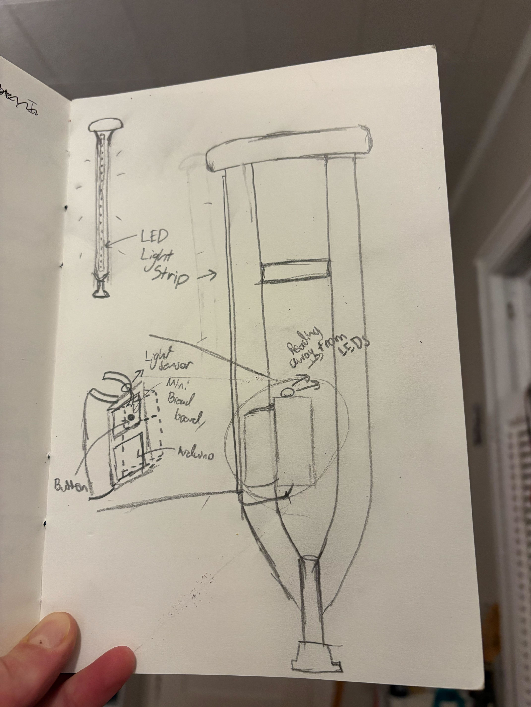

VisiCrutch is a modified crutch that helps mobility impaired users navigate dark spaces. When the crutch senses darkness it illuminates the surrounding area. This functionality can be toggled via a button or the crutch can light up in response to manual input.
LED Light strips (for illumination)
Transistor (to power LED Light Strips)
Light Sensor (to activate lights)
Button (to toggle modes)
Assorted resistors (for current-limiting)
Crutches (for modification)
Filament (for 3D printed electronic housing)
Initial 3D print (2/27)
Schematic and calculations (2/4)
Wiring and code (2/5)
Final assembly and 3D print (2/7)
Demo video shot (2/8)
Demo video edited (2/10)
Presentation completed (2/11)
My biggest challenge in this project is time. I am leaving for Lake Placid NY to compete
at the USCSA National Championship for alpine skiing on March 9th. Therefore, I must have
completed all physical components of this project by then. If 3D printing a bigger challenge
than I anticipate, I will have to push these dates back and potentially fly with my Arduino.
If This ends up being the case, I will make my knee brace light up instead of my crutches.
